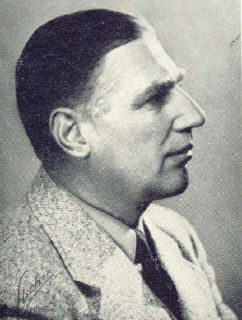

|  |
von Hippel-Lindau disease = A syndrome characterised by angiomatosis of the retina, haemangioblastoma of the cerebellum and walls of the fourth ventricle, commonly associated with polycystic lesions of the kidney and pancreas.
von Hippel-Lindau tumour = A disturbance characterised by angiomata of the retina and cysts and angiomata of the brain and certain visceral organs.
Arvid Vilhelm Lindau studied medicine at the University of Lund, graduating in 1923. When he published his classic thesis on cerebellar cysts and their relationship to angiomata of the retina: "Studien über Kleinhirncysten. Bau, Pathogenese und Beziehungen zur Angiomatosae retinae", he worked in the Institute of Pathological Anatomy in Lund. Lindau received training in bacteriology in Copenhagen and at Harvard University, Boston, which he visited as a Rockefeller scholarship holder 1931-1932. In 1933 he succeeded John Forssman (1868-1947) in the chair of general pathology, bacteriology and general health science (allmän hälsovårdslära) in Lund.
As a bacteriologist he concerned himself chiefly with clinical bacteriology: bovine tuberculosis, Boeck's sarcoid, chemotherapy and chemoresistence in bacterial infections, Wassermann's reaction and the problems of blood transfusions. Outside his medical career Lindau was active in politics and musical.
References: